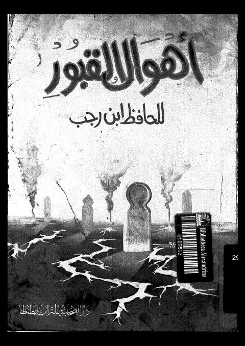

Downloads need an internet connection.
أهوال القبور
Authors: ابن رجب الحنبلي
Publishers: دار الصحابة للتراث
**▫️ العنوان: أهوال القبور** ▪️ المؤلف: #ابن_رجب ▫️ الناشر: #دار_الصحابة_للتراث ▪️ تاريخ النشر: 1991-1412 ▫️ بلد النشر: طنطا، #مصر ▪️ الطبعة: 2 ▫️ عدد الأجزاء: 1 ▪️ الصفحات: 164 ▫️ نوع الوعاء: #كتاب ▪️ التصنيف الرئيسي: #الزهد_والرقائق ۪